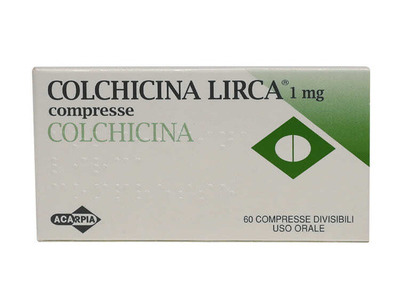

Колхіцин / Colchicine / Колхицин
Виробник: Італія

Контактна інформація:
Ціна: 425 грн/уп.
В наявності
Виробник: Італія
Ціна: 425 грн/уп.
В наявності
Саме в FarmItal ви можете купити колхицин, colchicine, колхіцин в Україні, Гарантовано Якісний!
Доставка Colchicine здійснюється транспортними компаніями, терміни виконання замовлення обумовлюються менеджером Фармітал. Ви можете замовити Колхіцин,Колхицин у містах: Одеса, Херсон, Чернігів, Сєверодонецьк, Бердянськ, Бровари, Дніпро, Вінниця, Київ, Слов'янськ, Полтава, Краматорськ, Біла Церква, Кам'янське, Маріуполь, Чернівці, Олександрія, Кам'янець-Подільський, Львів, Запоріжжя, Кропивницький, Житомир, Івано-Франківськ, Суми, Черкаси, Костянтинівка, Мелітополь, Кривий Ріг, Рівне, Луцьк, Нікополь, Павлоград, Ужгород, Кременчук, Лисичанськ, Хмельницький, Тернопіль, Харків, Миколаїв, а також в інших населених пунктах України.
Таблетки.
Колхіцин ефективно знімає біль при гострих нападах подагри, має виражений протизапальний ефект. Його дія пов’язана зі зниженням міграції лейкоцитів у вогнище запалення і пригніченням фагоцитозу мікрокристалів солей сечової кислоти. Затримує відкладення в тканини солей сечової кислоти.Колхіцин має здатність до зниження дофамін-бета-гідроксилази.
Лікування гострих нападів подагри та профілактика гострих нападів подагри під час початкового лікування препаратами алопуринолу або препаратами, що сприяють виведенню сечової кислоти.
Самолікування може бути шкідливим для вашого здоров'я! Перед початком лікування зверніться до вашого лікаря!!
Найбільш поширеними побічними проявами під час застосування колхіцину єнудота, блювання, діарея та біль у животі. Більші дози можуть провокувати тяжку діарею, гастроентерологічні кровотечі, м’язову слабкість, шкірні висипання, ураження нирок та печінки. Як наслідок, можливі зневоднення та артеріальна гіпотензія. Можливі відчуття поколювання у кінцівках, атрофія м’язових тканин, судоми або слабкість у м’язах; алергічні реакції шкіри; можливий розвиток захворювань крові (лейкопенія, нейтропенія, тромбоцитопенія, рідко - агранулоцитоз, гіпопластична анемія); стоматит; пригнічений сперматогенез. Після тривалої терапії можуть розвинутись алопеція, периферичний неврит, пригнічення кісткового мозку.
При лікуванні препаратом не можна приймати алкоголь.Необхідно звернутись до лікаря, якщо будь-яка із зазначених побічних реакцій набуває серйозної форми або якщо спостерігається побічний ефект, не зазначений в інструкції.
Симптоми передозування можуть проявлятися через декілька годин після прийому препарату. Перші ознаки - відчуття печіння в горлі, роті, нудота, блювання, спрага та діарея (діарея може бути тяжкою, із кров’ю), позиви до сечовипускання та дефекації, тенезми, коліки, як правило, при впалому животі. Виникає відчуття печіння на шкірі. Можливі розвиток метаболічного ацидозу, зневоднення, тахікардія, відчуття болю та стиснення в ділянці серця, зниження температури тіла, блідість шкіри, ціаноз та диспное, порушення з боку органів зору, артеріальна гіпотензія і шок. Повідомлялося про випадки дисемінованих ушкоджень судин та гострої нефротоксичності з олігурією та гематурією
У пацієнтів можуть з’явитися судоми, марення, слабкість у м’язах, нейропатія і висхідний параліч центральної нервової системи. Можливий розвиток дихальної та серцево-судинної недостатності або пригнічення функції кісткового мозку із летальним наслідком. Показник летальної дози коливається. Був зафіксований летальний випадок після отримання колхіцину у дозі 7 мг, тоді як значно більші дози виявлялися несмертельними.
Препарат з особливою обережністю та під наглядом лікаря призначають пацієнтам літнього віку та виснаженим хворим, пацієнтам з хворобами серця, нирок, печінки та шлунково-кишкового тракту; при дихальній недостатності, при порушеннях роботи серцево-судинної системи, кісткового мозку. Лікування колхіцином проводять при ретельному клінічному та гематологічному контролі, періодично контролюючи вміст калу на приховану кров. При виявленні виражених побічних ефектів зменшують дозу або частоту прийому препарату, за необхідності - відміняють прийом препарату.
Зберігати у недоступному для дітей місці. Не потребує особливих умов зберігання.